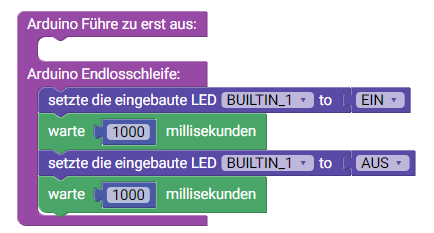

- Das Programm in Maschinensprache zu übersetzen (Kompilieren des Programms).
- Den Maschinencode über das USB-Kabel auf den Mikrocontroller zu laden (Flashen des Programmcodes).

Die LED auf dem Arduino Uno blinkt jetzt schnell.
Der Arduino Uno hat eine eingebaute LED. Diese ist am Pin 13 angeschlossen. Mit folgendem Programm lassen wir diese LED blinken.
Auf der Internetseite https://sensebox.github.io/blockly/ steht ein Editor zur blockbasierten Programmierung des Arduino Unos zur Verfügung.
Erstelle folgendes Block-Programm:

Auf der rechten Seite wird dir der automatisch erzeugt Arduino-Quellcode angezeigt:
void setup() {
pinMode(13, OUTPUT);
}
void loop() {
digitalWrite(13, HIGH);
delay(1000);
digitalWrite(13, LOW);
delay(1000);
}
Diesen Code können wir jetzt in die Arduino-IDE kopieren.
Die setup-Methode wird nur einmal durchlaufen, wenn der Mikrocontroller gestartet wird. In dieser Methode werden grundlegende Einstellungen für den Betrieb des Mikrocontrollers vorgenommen.
Merke:
Die geschweiften Klammern { } umfassen den Code, der beim Aufruf der Methode ausgeführt wird. Man bezeichnet diese Einheit auch als Block im Code.
pinMode() ist eine Methode, d.h. ein in der Programmiersprache festgelegter Befehl.
Mit ihm kann ein bestimmter Anschluss (Pin) des Arduinos entweder als Eingang (INPUT) und als Ausgang (OUTPUT) geschaltet werden kann. Man bezeichnet die Anschlüsse daher auch als IO-Pins.
Die Methode pinMode(13, OUTPUT); legt fest, dass der Pin 13 als Ausgang verwendet wird.
pinMode(6,INPUT); würde Pin 6 als Eingang festlegen.
Die loop-Methode wird beim Betrieb des Arduinos immer wieder durchlaufen. Sie stellt also eine Endlosschleife dar.
Diese Methode legt am Pin 13 ein positives Potential (+5 V) an. Die mit dem Pin 13 verbundene interne LED beginnt zu leuchten.
Das Programm pausiert 1000 ms lang. So lange leuchtet die LED.
Der Pin 13 wird mit Masse verschaltet, d.h. sein Potential wird auf 0 V festgelegt. Die interne LED leuchtet nicht mehr, da keine Spannung mehr anliegt.
Die zweite Pause bedingt, dass die LED 1000 ms lang ausgeschaltet bleibt.
Da die loop()-Methode immer wieder durchlaufen wird, beginnt sie anschließend wieder zu leuchten. Sie blinkt also ungefähr einmal pro Sekunde.
Ändere das Programm so ab, dass die LED langsamer blinkt und lade es erneut hoch.